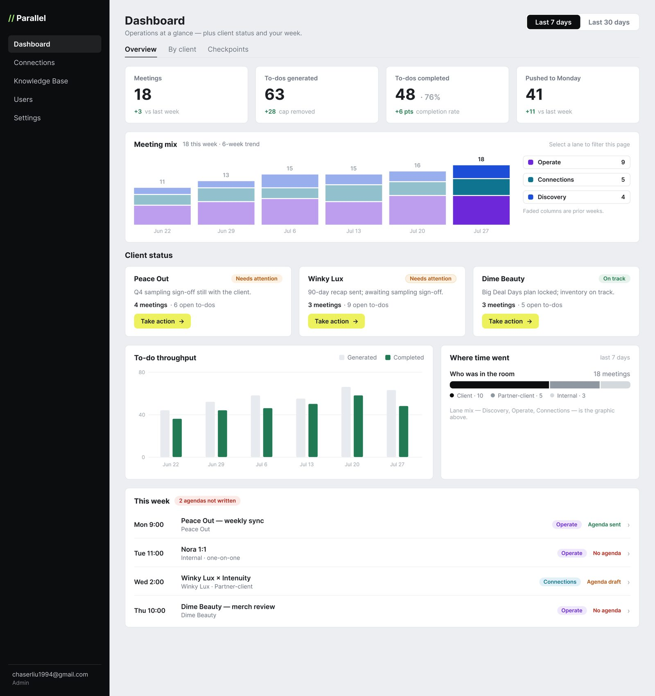

Parallel e-commerce agency, 2026
Designing an Internal Operating System
From data collector to decision tool.
- Role
- Lead product designer
- Team
- Agency founder, shareholders, one engineer
- Timeline
- 2026
- Problem
- Parallel's internal tool recorded every meeting and chatbot conversation but surfaced almost none of it. Of 328 recorded calls, about 16 had usable analysis. The team was collecting data it couldn't act on.
- Outcome
- A 23-finding review, a phased scope, and a redesign built around how the team works, now evolving to match the agency's own operating procedure.

Context
Parallel's team runs client, partner, and internal meetings all week. A bot records them, and AI turns each one into a summary, key topics, and to-dos that get pushed to Monday.com. The same tool tracks conversations from the website chatbot and holds the knowledge base the chatbot learns from.
Engineers built the first version quickly, and it captured everything. My work went three levels deep: first the interface, then the team's workflow, and finally the way the agency itself runs.
The interface: the signal was buried
I started with a review of the original build across all four screens. On nearly every one, the useful rows were buried under empty ones, so finding the meeting that went sideways or the lead worth calling took far longer than it should.
Recorded calls with usable AI analysis.
From my reviewChatbot conversations that were cold, most of them single-message bounces.
From my reviewFindings ranked by impact: 8 high, 11 medium, and 4 quick wins.
Shared with shareholdersBroken widgets undermined every number
The executive summary read "No data available" on a page full of data, and a trend chart looked flat against real volume. Each one quietly signaled that the tool couldn't be trusted.From my review of the original build
The most valuable insight was cut off
The AI's reasoning about how each meeting went, the part that actually helps someone act, was truncated with no way to open it.From my review of the original build
Rows nobody could tell apart
Most meetings had no title, and every chatbot lead was labeled with a machine ID.From my review of the original build
The knowledge base was write-only
Admins could upload files for the chatbot to learn from, but couldn't see what it already knew.From my review of the original build
The workflow: fit the tool to the work
A walk-through with the founder changed the question. The team didn't need cleaner tables; they needed a tool that matched how they actually work. Columns like platform and sentiment went unused, while client, meeting type, and owner were missing entirely, and calls the bot couldn't join simply vanished from the record.
I wrote a scope as a pre-read for the shareholders. It ranked the work into what to do now and what to do next on a modest budget, and marked each item that depended on engineering so those questions could be answered early. The shareholders chose to start with meetings, the most-used part of the tool. I then designed in short loops with the founder: build, review, adjust. Four decisions shaped the result.
Give every meeting one home
The situationMeetings showed up in a list, a detail page, the dashboard, and the weekly preview. The same information lived in four places and drifted apart.
What I choseMeetings became the system of record, called Checkpoints. The dashboard only reads out and links down. I folded the list, the meeting record, and its agenda into one tab and retired the standalone pages.
The tradeoffOne denser screen instead of several simpler ones, in exchange for a single source of truth.
Only let people send what they can see
The situationMy first design put a "Send report" button on each client card in the overview. In review, the founder pointed out that admins couldn't see the full report from there, so they couldn't be sure what they'd be sending.
What I choseCards now link to the full client report, and sending happens only where the whole report is visible, through one shared send screen with a preview of what the client will see.
Show the task, hide the setup
The situationA single meeting could produce anywhere from 5 to more than 40 to-dos, and each one needed six fields to push to Monday.com.
What I choseProgressive disclosure. Each to-do is one scannable line with its owner and push status, and the full setup opens only for the task you expand. The bulk action counts what's left ("Push 2 to Monday") so its scope is never ambiguous.
Design for what the AI can't do yet
The situationThe AI couldn't reliably tell internal meetings from client ones, and the bot couldn't join last-minute calls.
What I choseInstead of hiding those gaps, I designed for them: an "unclassified" state with quick reclassification and saved rules that train future tagging, and a manual transcript upload for calls the bot missed.
The design
The redesigned tool has four areas: an overview of the week, a sendable report for each client, the Checkpoints record for every meeting, and an admin view of the website chatbot, where I replaced arbitrary lead scores with three signals that are real: conversations, contact info shared, and calls booked.
Before handoff, I mapped every screen and modal in a user-flow diagram and scanned the designs for missing states, so engineering wouldn't hit dead-end buttons.
The agency: design for how it runs
After the redesign, the founders shared their own written procedure for how every meeting should be prepared, run, and followed up. I mapped it onto the designs screen by screen. It did two things.
It confirmed the core
What matchedWritten independently, the procedure landed on decisions the redesign had already made: no algorithm grading how a client sounds, a person approving everything before it goes out, a sendable report for each client, and the knowledge base as the chatbot's memory.
It raised the bar
Speak the agency's languageThe team has its own vocabulary for meeting stages, owners, and health, and the tool should use it wherever it maps to a real state.
Route, don't just displayThe overview should tell each person where to start, ranked by urgency, instead of only reporting numbers.
Recaps that hold people accountableA generic summary becomes a structured recap: what was decided, who committed to what and by when, and open questions.
A human gate on everything sentReports become drafts that a person reviews and sends, rather than messages the tool sends on its own.
Results and what's next
v3 is designed and with engineering, and the next version is being shaped around the agency's procedure. Once the tool is in production, these are the measures I'll report.
Hours saved each week on client reporting.
In buildTo-dos pushed to Monday.com without manual re-entry.
In buildMeetings with usable analysis, compared with 16 of 328 before.
In buildLooking back
I started by fixing screens. The biggest gains came from learning how the team actually works, first from a walk-through and then from the agency's own procedure. Next time, I'll ask for that procedure on day one.